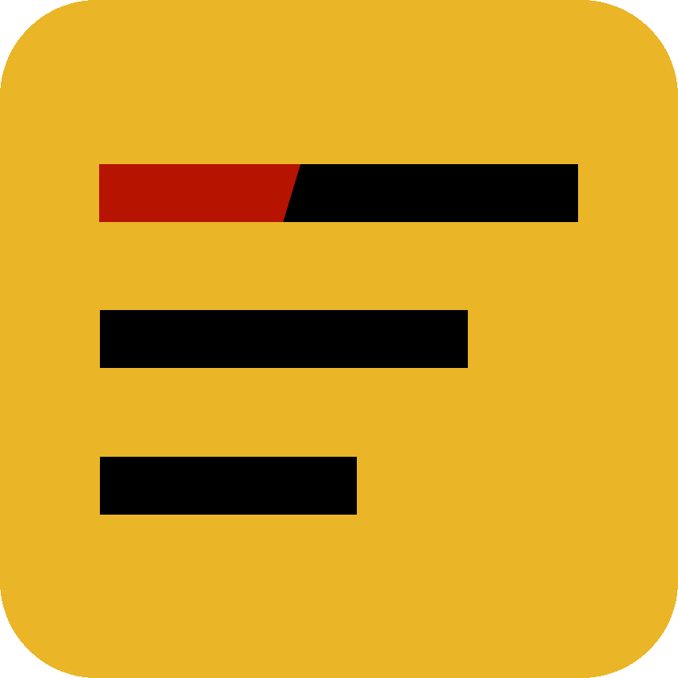

ENICON
How to install custom Picture Control recipes (.npc .np2 .np3)
Once you have edited the internal name or comments of your .npc .np2 .np3 files with ENICON, you can import them into Nikon NX Studio to apply them to your RAW (NEF) files or transfer them afterwards to your camera using a memory card.
Transferring recipes to a Nikon camera
If you also want to use the recipes directly while shooting on your camera:
- Format a memory card from your Nikon camera’s menu so the official folder structure is created.
- Connect the card to your computer and create (if it does not already exist) the
NIKON\CUSTOMPCfolder in the root directory of the card. - Copy the compatible files (
.npc,.np2, or.np3) intoNIKON\CUSTOMPC. - Insert the card into the camera and go to Photo shooting menu → Manage Picture Control → Load/save → Copy to camera.
- Choose the file you want to import and save it to one of the empty slots or by overwriting an existing one.
- Repeat the process if you want to add another recipe.
Importing into NX Studio
You can import up to 150 custom Picture Controls.
- Open NX Studio and select any RAW photograph (
.NEF) in the image browser. - In the top menu, go to File → Import Custom Picture Control... You can also click the corresponding button on the toolbar (on the right).
- In the pop-up window, select the source of the files: Memory card or From file.
- Locate the files (
.npc.np2or.np3) saved with ENICON, select them (you can select multiple files by holding down theCtrlorShiftkey), and click OK. - The profiles will appear immediately under the Custom Picture Control section with the new internal name you defined.
Batch deleting custom Picture Controls / recipes in NX Studio
This method has been verified to work on Windows 11:
- Close NX Studio completely.
- Open the Windows Registry Editor (
regedit.exe). - Navigate to
HKEY_CURRENT_USER\Software\Nikon\Common\PictureControl. - Back up: right-click the
Nikonkey → Export and save the.regfile. If you ever need to restore the data, double-click it. - In
regedit, select theCustomCurvessubkey. Click the first numeric value,Shift+ click the last one, and press Delete. Keep theCustomCurveskey itself and do not delete non-numeric entries such as(Default)if present. - Open NX Studio and verify that the Picture Control dropdown no longer displays the removed profiles.